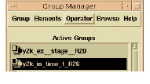

To perform operations on groups
1 In the Active Groups region of the Group Manager, select two or more groups.
2 From the Operator menu, select one of the four set operations.
The following operations are available:
• Intersection lists the elements that are common to all of the selected groups.
• Union lists every element contained in the selected groups.
• A – B (two groups only): compares group A (the one higher in the list, regardless of their order of selection) with the other (B). Lists the elements in A that do not also belong to B.
• B – A (two groups only): compares group A (the one higher in the list, regardless of their order of selection) with the other (B). Lists the elements in B that do not also belong to A.

When you select the operation, DIScover creates a group containing the results of the operation; the group is called RESULT_n.